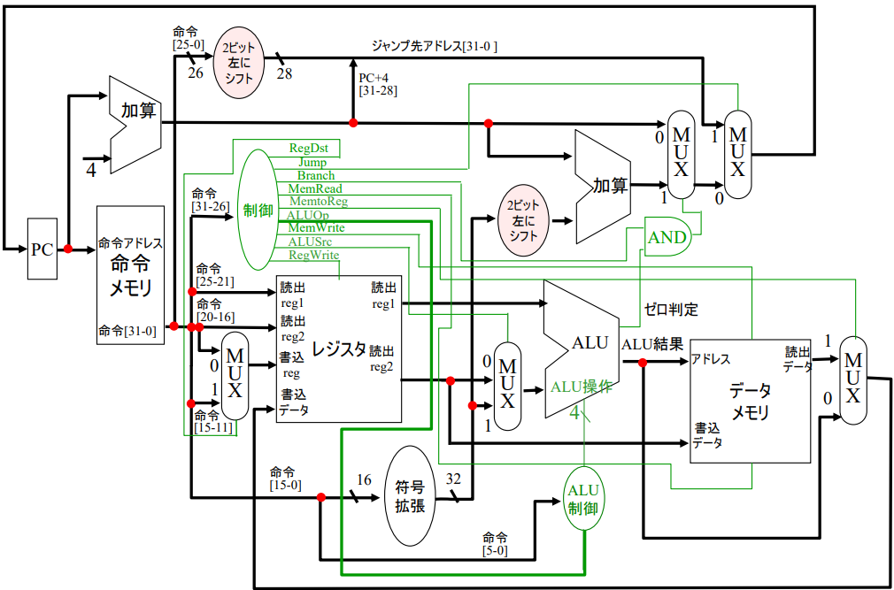
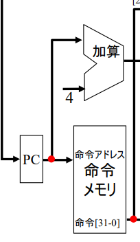
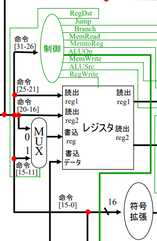
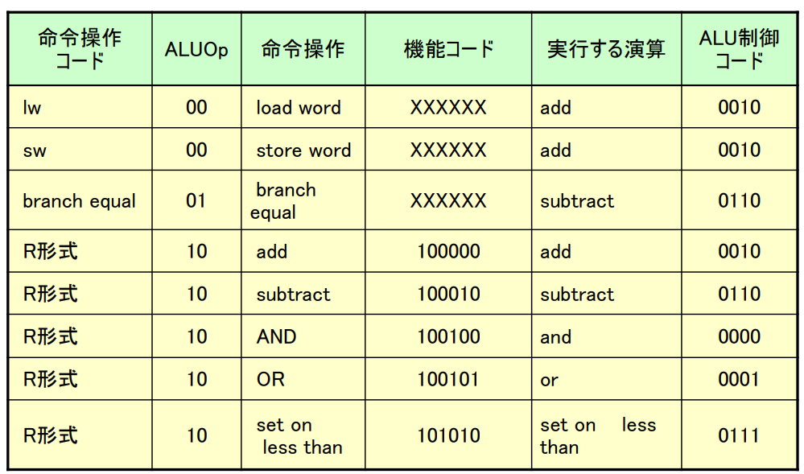
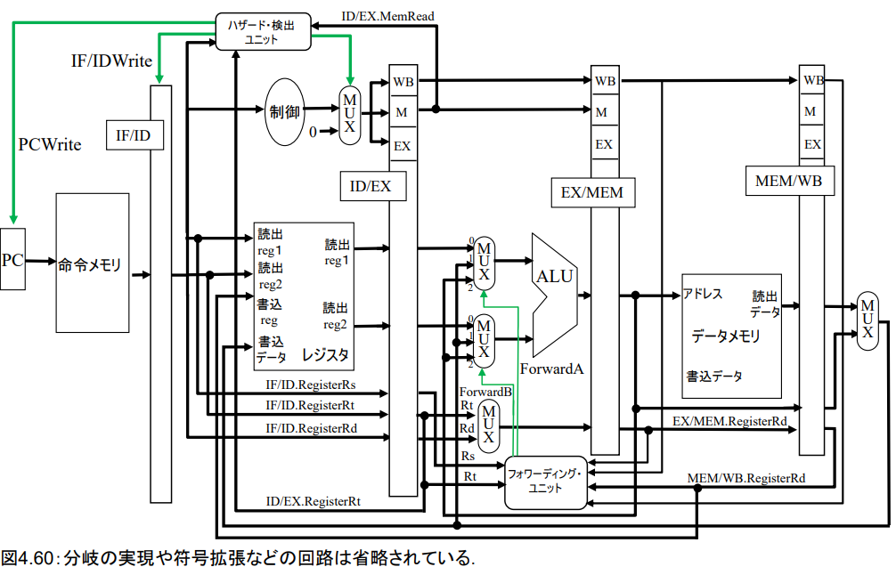

私の大学の計算機アーキテクチャの授業ではMIPSを取り扱ったんですね。なので、復習しようかなと。文字に起こすと覚えられるので。
目次
計算機アーキテクチャとは
計算機アーキテクチャとは、計算機の中身すなわち本質です。(しりませんが)
私、この授業が大好きで、本当に面白いんですよ。C言語で以下のプログラムを書いてどう動くか知ってますか。
#include <stdio.h>
int main() {
int result = 1 + 1;
printf("1 + 1 = %d\n", result);
return 0;
}
知っとるわーい
ほんとに?私は正直知りませんでした。というか知らなくていいと思っていました。printfは文字を出力してくれる「おまじない」でしょって。
でも腑に落ちなかったんですね。え、なんでこれをパソコンに書いたら実行されて計算できるのって。
それをこの計算機アーキテクチャは半分まで解決してくれるんですね。
なぜ半分かというともう半分はカーネルとかのOSよりになるらしいからです。
論理回路
この変なブログのカス記事を読んでいるあなたは論理回路をすでに勉強しているかもしれません。しかし、私は論理回路の単位がFだったのでもう一度復習します。
一応ここには書きませんが、知らない人がもし、いたときに備えて、ここでは適宜解説を入れます。
MIPSとは
MIPSを勉強する前に歴史を知っとくと勉強がはかどる派なので、ここでは歴史を知っときます。
計算機の一番最初のご先祖って知ってますか。人間でいうアダムとイブです。仏教でも表現しようと思いましたが、そういえば輪廻転生なので、始まりがありませんでした笑 私のご先祖はガチ坊主らしいので怒られそうです。
ENIAC
これは有名な話ですね。ENIACが世界で初めてのコンピュータというか計算機です。いつか見てみたいです。
じゃあ、ENIACのISA(命令セット)は何でしょうか?
正解は.......
ないです!!!!
なぜなら、ENIACはいわば配線を自分でイジイジして計算するようなものだったかららしいです。詳しいことは知りません。
EDVAC
EDVACは知っていますか？これはかなりマニアックですよ。これが世界で初めて単純な命令セットを実装した「プログラム内蔵方式」 のコンピュータでした。
実はフォンノイマンが設計しています。
未だに論文がMITのサイトで読めます。すごいですね。
これには非常に単純な命令セットしかなかったらしいですが、とりあえず先祖であることには間違いがないですね。
そのほかの偉大なCPU
いやCPUオタクの私に話させると長いですよー。
まずIntel 4004ですね。これはすごいですよ。とりあえず、半導体の始まりですね。知らないですけど。多分トランジスタとかが先です。
でも、それでもこれはものすごく意味があったんですね。
まぁ、性能とかアーキテクチャは置いといて、これの開発が面白んですね。
4004はもともと日本のビジコンとintelの共同開発なんですよ。
CPUには日本人技術者の血が流れているんですよ。
そう有名な嶋 正利先生ですよ。この先生とフェデリコ・ファジン先生が中心となって開発しました。嶋先生は理論、ファジン先生は物理を担当してそれぞれ開発を進めました。
いやーこんなところに日本人が出てくるのは本当に誇らしいです。私もいつか、自分の設計したCPUとかICが誰かのもとで使われたらうれしいですね。もしその人が何も感じずに使っていたらなおさらうれしいです。気にならないほど良いものを作れたという事ですから。
MIPS
あーやっとMIPSの話ですよ。もう何の話か分かんなくなってきましたね。
MIPSは1985年のアーキテクチャです。かなり新しいですね。ATARIとかもうありましたよね。MIPSはモダンなコンピュータでありますが、それでも勉強するにはうってつけです。
MIPSアーキテクチャはジョンヘネシー先生がスタンフォードで開発したものです。
あれ、ヘネシー?そうです。コンピュータアーキテクチャの標準的な教科書である。なんなら、専門家の人たちには「パタへネ」だけで通じる教科書を書いたあのヘネシー先生です。日本では「コンピュータの構成と設計」の教科書です。
アーキテクチャ全体像

これがMIPSの全体像です。
結論から申し上げると、命令をフェッチ→レジスタからデータを取り出し→計算→0判定→データに入れる 以上です。
自動車とかのエンジンと似ていると思いませんか。吸気→キャブレターでガソリンと混合→シリンダーへ送る→圧縮→点火→排気
これらを自動的にやってくれるのが計算機のすごいところですよね～
命令フェッチ

エンジンにおける吸気、つまり始まりを見てみましょう。
まず、プログラムが格納されているメモリがあります。そこから命令を取り出したいわけです。なので、命令を取り出しましょう。
PCとは「プログラムカウンタ」のことです。PC+4というのは現在のプログラムの番地に+4して次のプログラムを指すという事です。
命令長がMIPSは32bitなので、4バイトプラスすると、次の命令を指しますよね。という事です。
命令デコード
命令は今はただの32bitの意味の分からない数列です。
ニーモニック:ADD $1 $2 $3
機械語:000000 00010 00011 00001 00000 100000
なので、これをばらばらにしないといけません。
そこで用いるのがデコーダです。
例えば、ADD命令の場合は
ADD $1 $2 $3
というニーモニック(人間が読みやすい形)があります。意味は、$2と$3を足して$1に入れるという意味です。$1などの$というのはこれ自体が計算する数字ではないという事です。レジスタ番号のことです。あとでわかります。
000000 00010 00011 00001 00000 100000
これが機械語の形式です。
先頭から6bitまでの「000000」というのはR形式の命令を表します。
R形式というのは算術であるという意味です。
その次の5bit「00010」というのは$2を表します。
次の「00011」というのは、$3を表します。
そのさらに次は、「00001」というのは$1を表します。
ではその次の「00000 100000」は何でしょうか。
先ほど、先頭の「000000」はR形式で算術演算を表すといいました。算術演算とは加算.減算.シフト演算.などの演算を表します。
よって、今現在はこれは計算するような命令であるということしかわかりません。なので、それを一意に決定するためにその後半が必要になってくるわけです。
00000 : shamt (5ビット) - シフト量（ADD命令では使用しないので0） 10000 : funct (6ビット) - 関数コード
という名称があります。なので、勘のいい方はお気づきかもしれませんが、
最後のfunctの6bitで一意に演算の種類を決定しているわけです。
レジスタから数値をフェッチする

ここでは、先ほどデコードした命令を実際に別々の経路に流したとしましょう。これは簡単で、読み込みreg1 読み込みreg2にはそれぞれ、$2と$3が入ります。
命令がR形式という情報である「000000」は制御に送られます。するとこの制御は、MUXのregDstを1にします。これの意味は、$1が書き込みregであると伝えるためです。これは単一サイクルなのでこうなっていますが、並列処理であるパイプラインになるとまた変わります。
また、ALU(算術演算ユニット)にも何の演算をするのか伝えなくちゃいけないので、後半の「00000 100000」も制御に送られます。
先ほど、「$1などの$というのはこれ自体が計算する数字ではないという事です。レジスタ番号のことです。」と言いました。
「00010」などの5bitが数値なのだとしたら、このコンピュータは32までの数値しか計算できないことになります。しかし、この「00010」というのはレジスタを指します。さらにわかりやすく言うと「00010」という変数に格納された数字を使って計算します。
レジスタ番号は「00000」の5bitで指定します。なので、2^5個で全部で32個のそれぞれ32bitのレジスタを持っています。
レジスタ容量は、1024bitで128バイトのレジスタという事になります。
そのレジスタにあらかじめロード命令とか即値加算とかで入れといた値を使って計算を行うわけです。
ここでは、
- $2 には20
- $3 には30
の値を入れておきましょう。
なので、読み出しreg1は20 で 読み出しreg2は30が出てきます。
ALU

ALUとは、arithmetic logic unit、算術論理演算装置のことです。
中にいろいろ回路が入っていて、そこで頑張って計算を行います。
ALUには、制御から「これは加算命令ですよ。」とか「これは比較命令ですよ」とかが送られてきます。
今回はfunct「100000」が自動的に0010に変換されて、ALUが「はーい、加算を実行します」って感じで実行します。
ここに機能コードとの比較の画像
なので今回は「20+30」で50という結果が出力されます。
計算結果を戻す
計算ができましたね。なので、次は「$1」に格納します。
このALU結果の下の線を通ってレジスタに戻って格納されます。
ここに、MUXはいらないんですか？となりますが、データメモリ(RAMとかキャッシュ)には信号線がついていて、書き込むときだけONになったり読みだすときだけONになったりするのでいらないんです。
そして下を通って、レジスタの書き込みデータに入ります。
パイプライン
ここまで見ていて、天才の方はあれ、これって全部別々のことをしているからそれぞれのセクションに別の命令を流せば並列処理できるんじゃないの?と思ったかもしれません。
その通りです。それがパイプラインです。

このようにいちいち5クロック待たなくても次々と命令を流していけば時間が約5分の1になります。
ここで約と言ったのは、最も時間がかかる命令を基準にして実行しないといけないからです。
総括
パイプラインハザードとかの話をするとほんとに時間がかかるので今回はここまで、jump命令の話とかいろいろしないといけないんですが、勘弁。また次回かいつか投稿します。